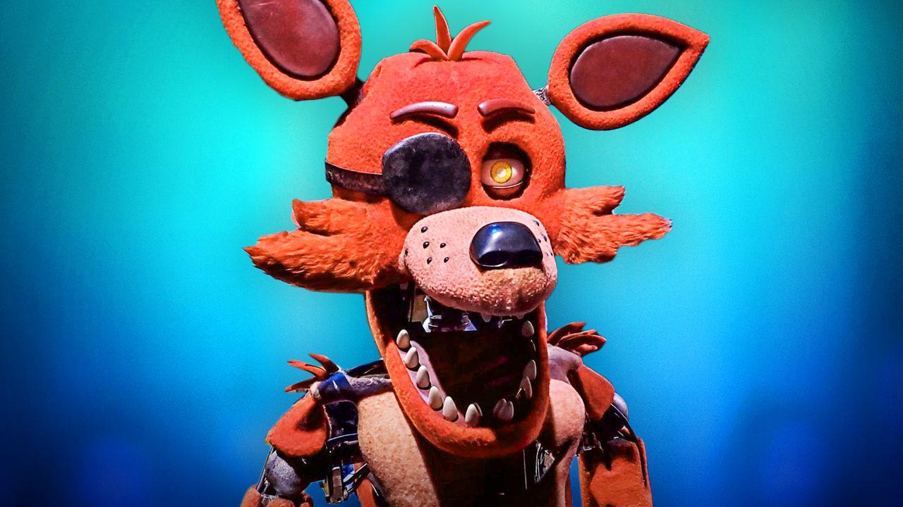

Esto borrará todo el avance guardado (candados, misiones y capítulo) y la app empezará desde cero. No se puede deshacer.
Toca para comenzar
Abre los 2 candados para acceder
0 de 9 revisados
Llamando...
El sospechoso está pensando...
Llamada entrante...
El verdadero ladrón del Hueso de Oro. Hay que ir a buscarlo antes de que lo entierre más hondo.

Llamada entrante...
Llamando...